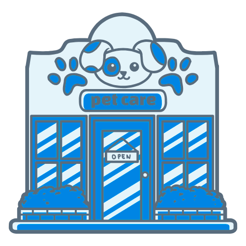
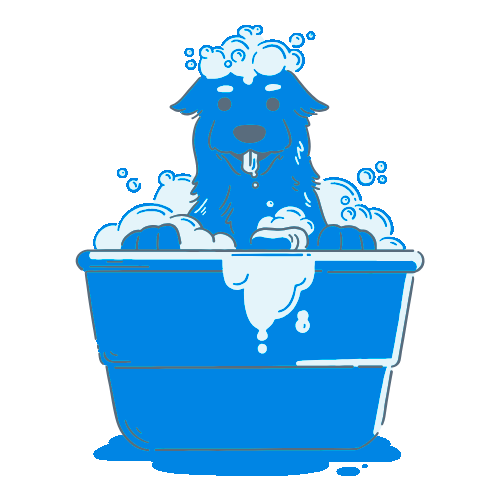
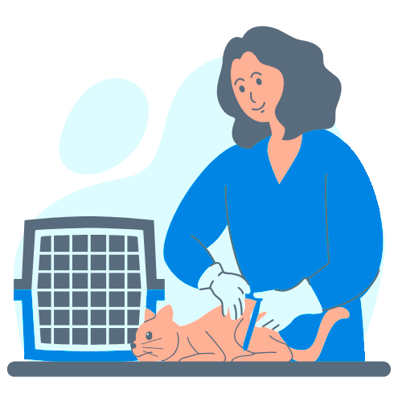

x
SOBRE NÓS SERVIÇOS PERGUNTAS NOSSOS PRODUTOSQUEM ATENDEMOS
Pet Shops & Casas de Ração
Consultório & Clinicas Veterinárias
Hospitais Veterinários
Banho e tosa
Fabricantes e Distribuidores
Profissionais da Área
CONTABILIDADE COMPLETA
Consiste no registro das operações econômico-financeiras, suportadas por documentação hábil, confrontadas com controles internos e extratos bancários da Empresa, permitindo a geração de relatórios legais e gerenciais, tais como Demonstração de Resultado, Fluxo de Caixa e Balanço Patrimonial, dentre outros. Os relatórios gerados contribuem significativamente com a gestão da empresa.
QUEM SOMOS?
A Contábil Pet é especialista em atender exclusivamente Pet Shops e Clínicas Veterinárias, oferecendo soluções contábeis completas que vão muito além do básico. Nosso foco é proporcionar tranquilidade, segurança e eficiência na gestão do seu negócio.
Por conhecermos profundamente as particularidades do setor pet, conseguimos reduzir a carga tributária de forma legal, evitando o pagamento desnecessário de impostos e prevenindo multas por procedimentos incorretos. Atuamos de forma estratégica para que sua empresa esteja sempre em conformidade com as exigências fiscais.
Na Contábil Pet, profissionais especializados + processos inteligentes + tecnologia de ponta se unem para entregar um serviço ágil, transparente e que gera resultados reais. O nosso compromisso é ajudar você a focar no que realmente importa: o cuidado com os animais e o crescimento da sua empresa.
FALE CONOSCO